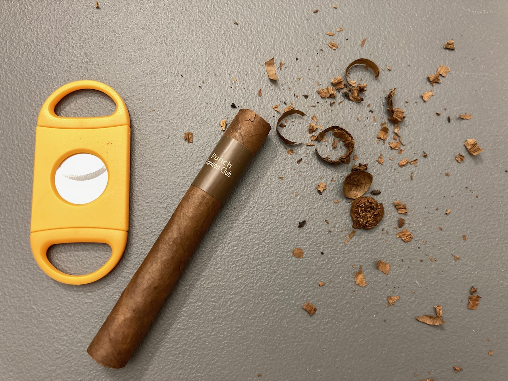

Cigar Review: Punch London Club
This is an interesting cigar. It is fairly inexpensive comparing to some premium brand, but I find this quite a pleasant cigar. It does not come with the original Punch cigar band for Canadian package though. 😦
When I first took it out of the cellophane, it immediately gave me this strong tea smell. It reminds me of London fog or Earl grey. It's interesting because I never find smell an unlit cigar pleasant. This is probably the first one that made me want to give it an extra sniff.
I did not do a great job at cutting this one. The first try was too slanted and cracked the head. I got mad at myself for not able to handle things so simple. Consider this is an rather inexpensive cigar, I performed a second cut to hope to fix the broken head and made it worse. 😦

Despite the fact that I ruined the construction of the cigar, the flavour was amazing though. The draw was good. It was just tea smooth. It does remind me of tea when I lit it up too, which I wasn't fully expecting it.
The cigar was smooth throughout. There is no hint of spice or harshness on this one. The tea flavour did faint out as you reach the end of the cigar. Even though there's no flavour towards the end, it didn't give me those harsh bitter bad taste!
As much as I enjoy this cigar, I didn't stay with it until the end since it was getting really late. I could probably go for another 10 minutes, but I didn't want to keep walking around the office area. It gave me a solid 30-minutes and I thought it was good enough. The night started quite peacefully, but the wind did start to get picked up. I went home before the wind got too crazy. 💨

Anyways, I hope you enjoy reading my post as always. If you like to see more of my cigar review, please do consider supporting this website. Thank you and have a great day! 💞 ☀